Montura motorizada de dos ejes (altitud-azimut) que apunta un puntero láser verde "303" a cualquier estrella del cielo. Se enrosca al tornillo 3/8"-16 de un trípode de telescopio. Un ESP32 mueve dos motores 28BYJ-48 a través de correas GT2 con reducción 1:4 y enciende el láser con un relé. La mecánica está pensada para un error de apuntado menor a 2°: el presupuesto estimado es de 0,5° (suma cuadrática) y 1,35° en el peor caso.
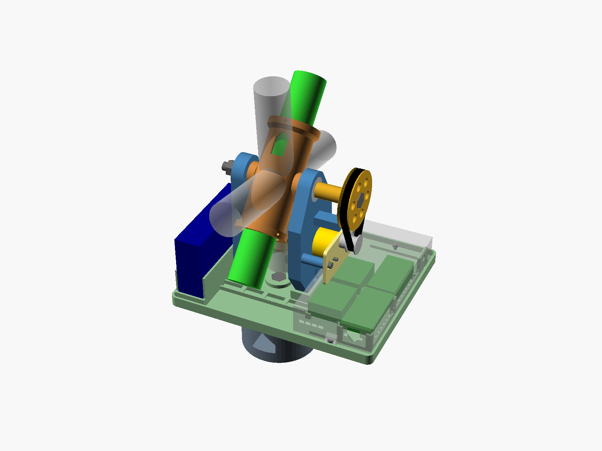
10 archivos STL
≈ 420 g de filamento
29 componentes para comprar
$ 114.969 + 18 sin precio
Lo que necesitás y cuánto cuesta
Componentes con precio verificado$ 114.969US$ 74,66Comprando paquetes completos (11 de 29 componentes)
Solo lo que se usa$ 102.731US$ 66,71Si ya tenés el rollo y el resto de los paquetes
El precio final todavía no está completo: faltan 18 componentes
sin precio verificado. No se cargan precios que no se hayan podido confirmar en una tienda.
Ver los 18 componentes sin precio
1 × Perno M8 × 50 mm cabeza hexagonal (eje de azimut)
1 × Perno M8 × 55 mm cabeza hexagonal (eje de altura, lado del motor: entra desde afuera por la polea)
1 × Perno M8 × 30 mm cabeza hexagonal (eje de altura, lado del cable)
2 × Tuerca autoblocante M8
1 × Tuerca M8 común de 6,5 mm de alto (DIN 934), para el muñón +X de la cuna
1 × Tuerca 3/8"-16 UNC (tornillo del trípode)
4 × Tornillo M3 × 12 mm + 4 × tuerca M3: pies de los brazos
2 × Tornillo M3 × 10 mm + 2 × tuerca M3: carro de azimut
2 × Tornillo M3 × 12 mm: carro de altura, autorroscante en los pilares
4 × Tornillo M3 × 8 mm + 4 × arandela M3: orejas de los motores, autorroscante en el carro
2 × Tornillo M3 × 16 mm: tensores, autorroscante en los topes
6 × Prisionero M3 × 8 mm (DIN 916, punta plana): colimación del láser
1 × Tornillo M3 × 12 mm para roscar previamente los agujeros de los prisioneros (se retira)
2 × Tornillo M3 × 10 mm + 2 × tuerca M3: tapa
1 × Módulo relé de 1 canal compatible con lógica de 3,3 V: disparo por nivel alto, o con puente "H/L" en H
1 × Cable USB-A con salida a bornes (o cable USB cortado)
40 cm de cable de silicona de 2 × 26 AWG (relé → láser)
Una banda elástica o una tira de velcro para el power bank
Precios de tiendas argentinas, verificados entre 2026-10-06 y 2026-10-06.
Tipo de cambio: US$ 1 = $ 1.540 (Dólar oficial (venta),
DolarApi,
2026-10-05). Los precios cambian: confirmalos antes de comprar.
Medir tus componentes antes de imprimir nada: diámetro, largo y punto de equilibrio del láser, y medidas del power bank y de las placas (sección 4.1). Si difieren de los valores del diseño entregado, cargarlos en src/puntero_laser_parametros.scad y regenerar los STL (sección 4.3).
Imprimir la probeta del 608 y calibrar ajuste_608 (sección 3.1). Si el valor cambia, regenerar los 10 STL.
Imprimir el resto de las piezas en PETG (sección 1).
Comprar los componentes de la lista de materiales (sección 2). Con el relé, fijarse que sea compatible con 3,3 V (sección 5.4).
Armar siguiendo los pasos de la sección 2 y hacer la puesta a punto (sección 3).
1. Especificaciones de Impresión 3D
Holguras por defecto, no medidas. Este proyecto todavía no tiene un perfil de impresora medido (src/perfil_impresora.scad). Los encajes de este diseño usan valores genéricos para FDM con boquilla de 0,4 mm:
encastres de 0,25 mm;
paso de M3 de 0,3 mm;
alojamientos de tuerca de 0,2 mm;
paso de M8 de 0,4 mm;
608 a presión con +0,10 mm.
Los más críticos son los alojamientos de los 608: calibrarlos con la probeta (3.1) antes de imprimir el resto.
Orden de impresión: imprimir primero la probeta de ajuste del 608 (sección 3.1). Si el valor de ajuste_608 cambia, hay que regenerar los 10 STL antes de imprimir el resto.
Pieza
STL
Cant.
Orientación (cara sobre la cama)
Relleno
Perímetros
Soportes
Adherencia
Masa maciza*
Probeta de ajuste del 608
puntero_laser_probeta_ajuste_608.stl
1
Plana, tal como viene
15 %
3
No
—
13 g
Adaptador del trípode (base)
puntero_laser_adaptador_tripode.stl
1
Cara de apoyo del trípode
40 % giroide
4
No
—
254 g
Plataforma de azimut
puntero_laser_plataforma_azimut.stl
1
Cara inferior
20 % giroide
3
No
Borde (brim) de 5 mm si la cama despega esquinas
212 g
Brazo de la horquilla, motor
puntero_laser_brazo_horquilla_motor.stl
1
Cara interior (pilares hacia arriba)
30 %
4
No
—
101 g
Brazo de la horquilla, cable
puntero_laser_brazo_horquilla_cable.stl
1
Cara interior (canal hacia arriba)
30 %
4
No
—
57 g
Cuna del láser
puntero_laser_cuna_laser.stl
1
De pie, sobre un anillo de colimación
30 %
4
No
Borde (brim) de 5 mm
55 g
Polea de altura
puntero_laser_polea_altitud.stl
1
Cara exterior (cubo hacia arriba)
40 %
4; capa de 0,16 mm
No
—
23 g
Carro del motor
puntero_laser_carro_motor.stl
2
Plano
40 %
4
No
—
8 g c/u
Separador y 3 arandelas
puntero_laser_separador_azimut.stl
1
De pie, tal como viene
100 %
—
No
—
1 g
Tapa de la electrónica
puntero_laser_tapa_electronica.stl
1
Techo
15 %
3
No
—
54 g
* Masa si la pieza fuera maciza de PETG. Con los ajustes de la tabla, el conjunto impreso pesa ≈ 420 g; el laminador da el valor exacto.
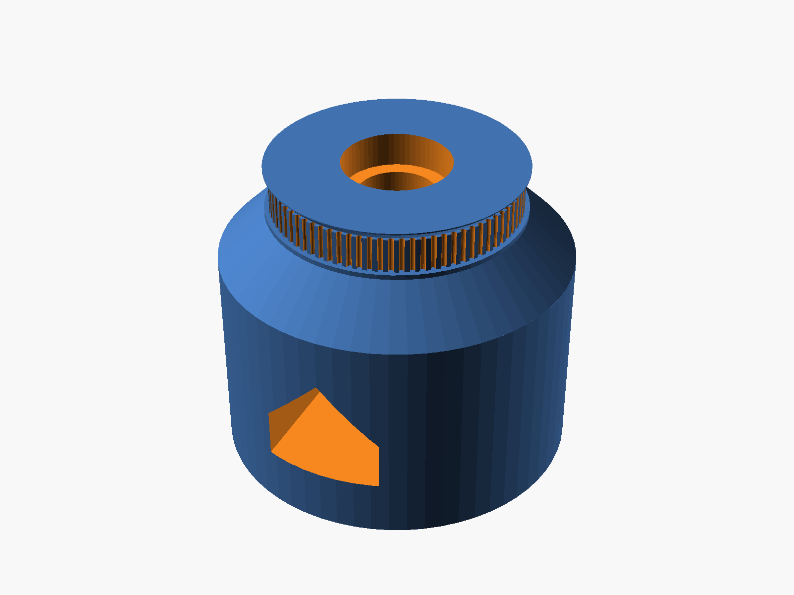
Base
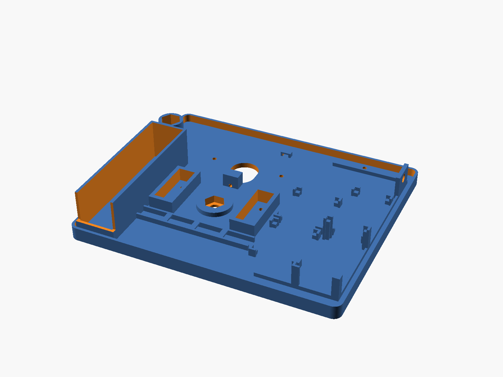
Plataforma
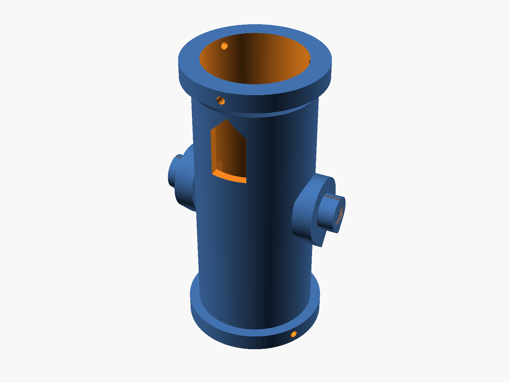
Cuna
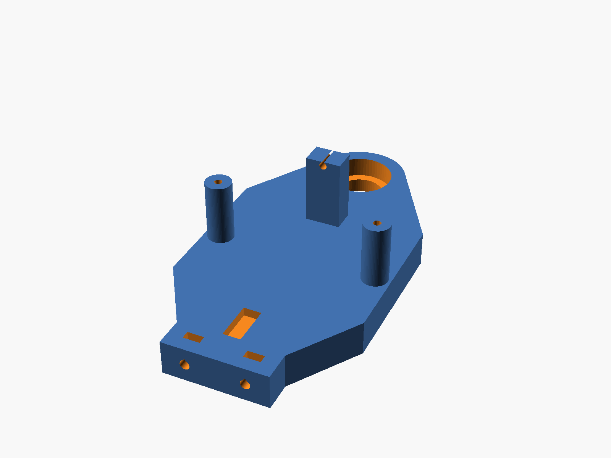
Brazo motor
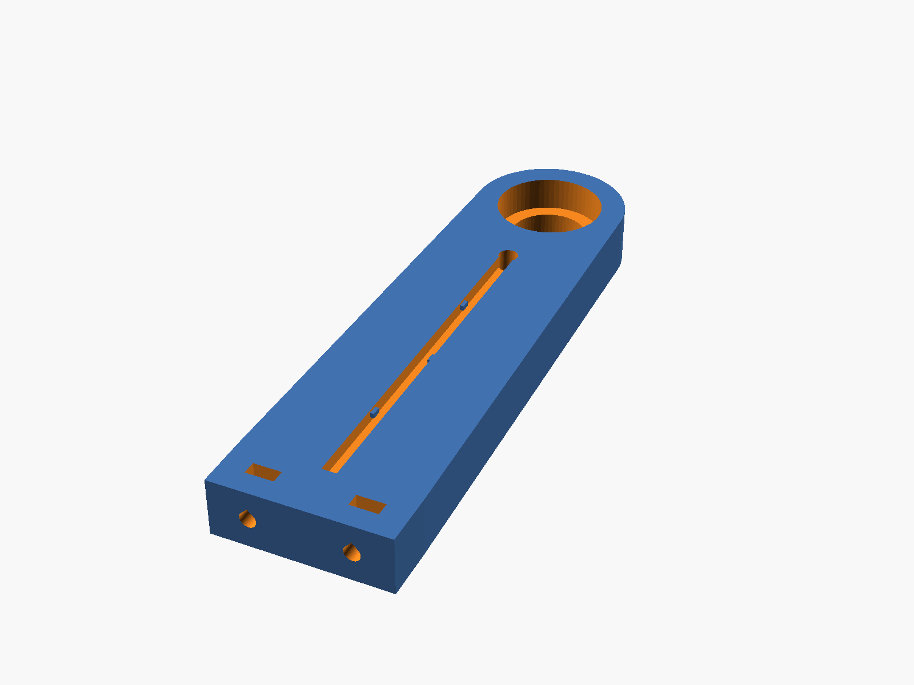
Brazo cable
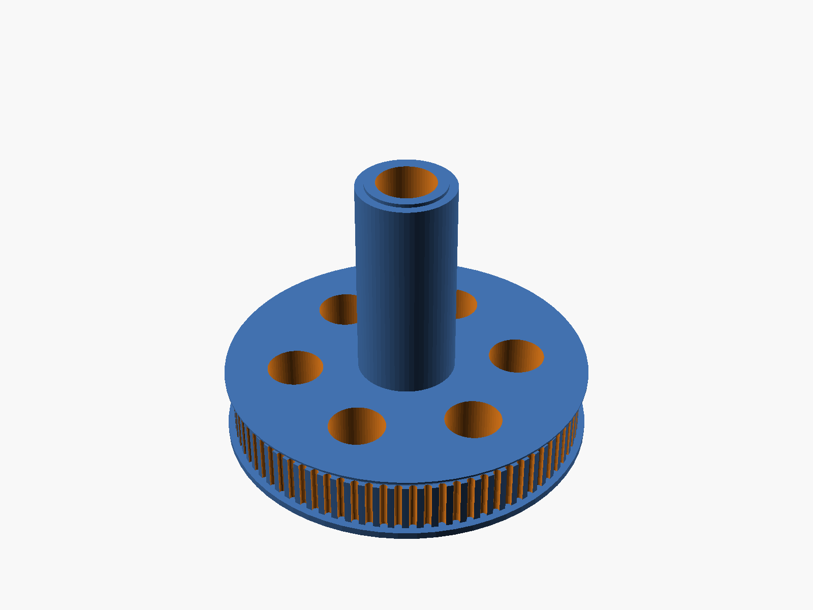
Polea de altura
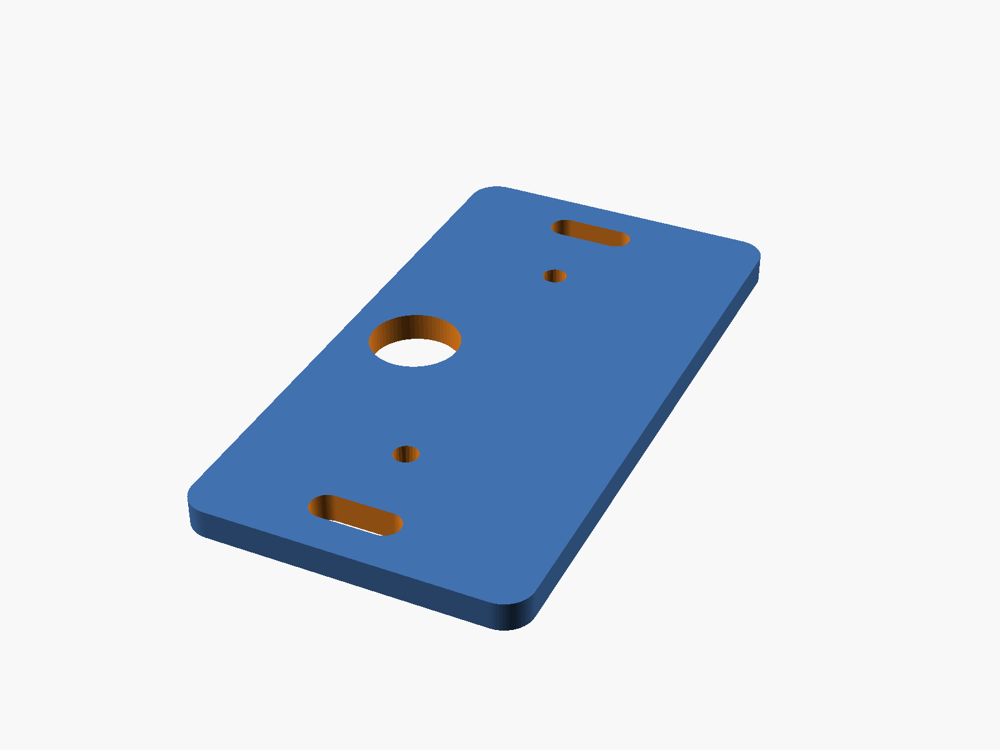
Carro (×2)
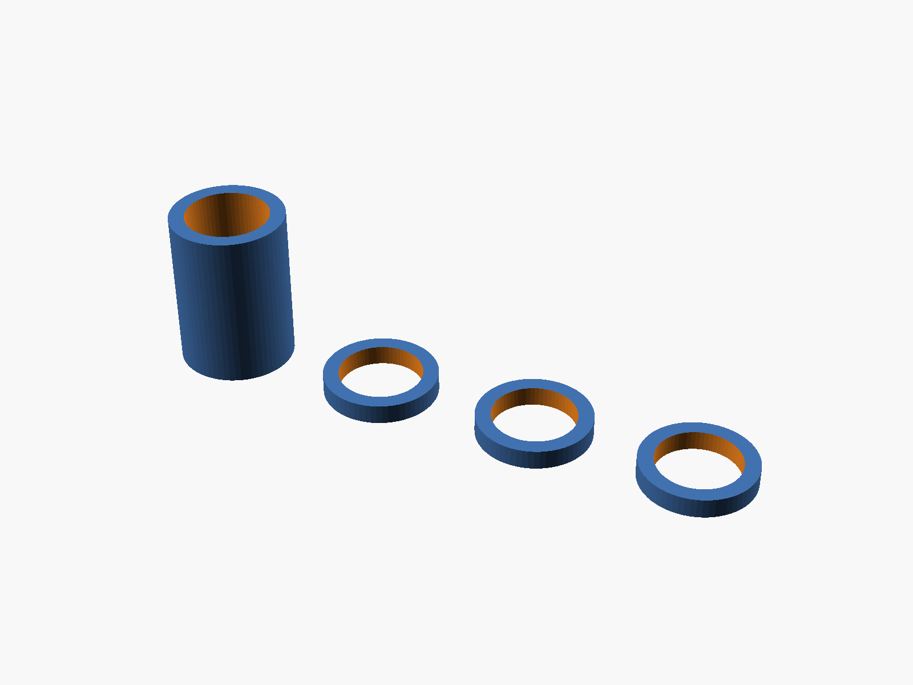
Separador y arandelas
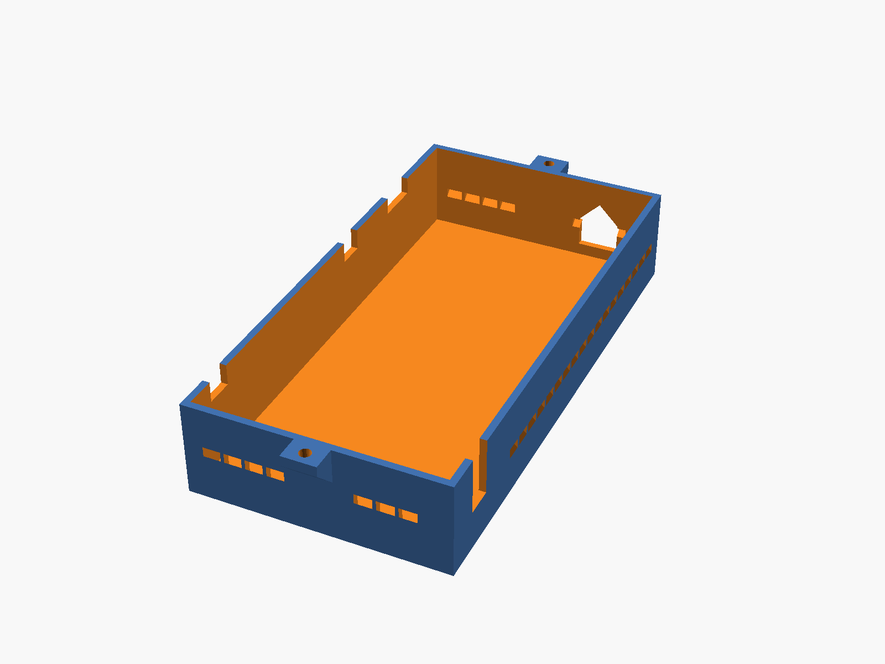
Tapa
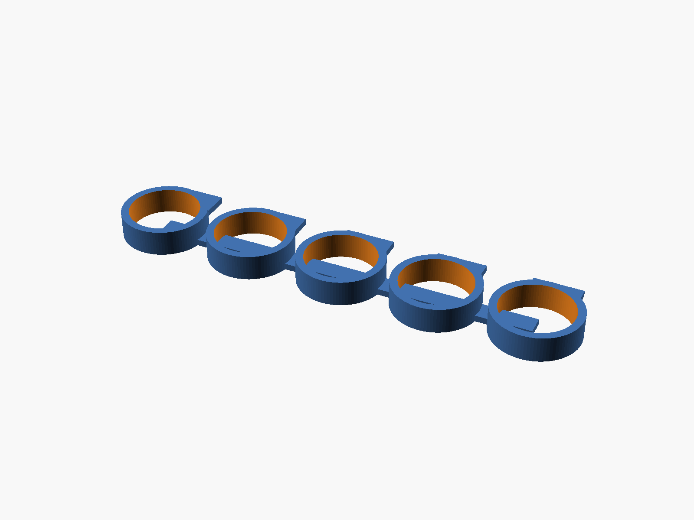
Probeta del 608
Ninguna pieza necesita soportes. Los únicos voladizos son puentes cortos: los techos de las tuercas embebidas, las ranuras de la cuna, las ventanas con techo a dos aguas (ningún puente supera 10 mm), y la repisa anular de 3 mm sobre el alojamiento del 608 inferior de la base. Los muñones de la cuna, la ventana de la base y las pestañas de las poleas tienen perfiles a 45°.
Configuración común del laminador:
Capa de 0,2 mm (0,16 mm en las poleas, para que los dientes GT2 salgan definidos).
5 capas superiores e inferiores.
Sin "alisado" (ironing) en las caras de apoyo de los rodamientos.
Material recomendado: PETG, con boquilla a 230–245 °C y cama a 70–85 °C. Resiste la humedad nocturna y la temperatura dentro de un auto al sol. El PLA sirve para pruebas, pero se ablanda a ~55 °C.
Antes de empezar, retirar los restos de impresión de todos los alojamientos y probar el ajuste de los 608 (sección 3.1).
En cada imagen, las piezas de ese paso van en color y la flecha naranja muestra hacia dónde se mueven para colocarlas. Lo que ya está armado se ve transparente.
Ver el armado en 3DLas piezas se mueven hasta su lugar y se puede girar la vista.
Base: tuerca del trípode. Dejar caer la tuerca 3/8"-16 por arriba de la base hasta su alojamiento hexagonal del fondo. El tornillo del trípode la tira contra el piso.
Base: rodamientos de azimut. Prensar un 608ZZ desde arriba en el alojamiento superior. Meter el segundo 608 por la ventana lateral y prensarlo hacia arriba en el alojamiento inferior: se puede tirar de él con el perno M8 × 50, arandelas y una tuerca. Los dos quedan apoyados contra el resalte central.
Cuna: perno del lado del cable. Antes de colocar el láser, meter el perno M8 × 30 desde dentro del tubo, con la punta primero, por el muñón −X (el que está junto a la ranura del cable), hasta que la cabeza entre en su hexágono. El perno queda apuntando hacia afuera.
Cuna entre los brazos. La horquilla se arma con los brazos sueltos: atornillados a la plataforma quedan a 50 mm, y la cuna con sus anillos de contacto mide 60 mm. Calzar el brazo cable sobre el perno M8 × 30 hasta que el anillo de contacto del muñón −X apoye en el aro interior del 608. Del otro lado, calzar el brazo motor sobre el anillo del muñón +X. Las caras interiores de los brazos miran hacia la cuna.
Polea de altura. Meter la tuerca M8 común por un extremo del tubo y encajarla en el hexágono del muñón +X; sostenerla con un dedo. Pasar el perno M8 × 55 por la polea 80T desde la cara exterior, con la cabeza en el hexágono, y llevarlo con el cubo de la polea hacia el brazo motor: atraviesa el 608 y el muñón y llega a la tuerca. Enroscarlo girando la polea mientras se sostiene la cuna, hasta que apriete; no hace falta llave. La cabeza hace de chaveta: la polea, el perno y la cuna giran juntos. La punta queda 0,5 mm antes del interior del tubo y no toca el láser.
Horquilla a la plataforma. Colocar una tuerca M3 en cada ranura del pie de los brazos, entrándola por la cara exterior del brazo. Bajar la horquilla armada (brazos, cuna y polea) a los marcos de la plataforma: el brazo motor en +X (lado de la tapa) y el brazo cable en −X (lado del power bank). Fijar cada brazo con 2 × M3 × 12 desde abajo de la plataforma. Si para que los pies entren en los marcos hay que separar los brazos, la cuna queda corta: retirar el brazo cable, poner arandelas M8 finas en el perno entre el muñón y el 608, y volver a armar ese lado.
Motores a los carros. Atornillar cada 28BYJ-48 a un carro con 2 × M3 × 8 y arandela, autorroscantes en los agujeros de las orejas. El cuerpo del motor queda hacia +X del carro, del lado contrario al agujero del eje.
Motor de azimut. Colocar las 2 tuercas M3 en los hexágonos de la cara inferior de la plataforma, bajo el asiento del carro (+Y). Apoyar el carro con el motor encima y el eje hacia abajo, a través de la abertura alargada, con la cara del tensor hacia el tope. Fijarlo con 2 × M3 × 10 sin apretar. Desde abajo, calzar la polea 20T en el eje, con el cubo hacia arriba metido en la abertura, y apretar sus prisioneros sobre la cara plana del eje.
Plataforma sobre la base. Colocar una arandela de contacto impresa sobre el aro interior del 608 superior. Con la cuna horizontal, meter el perno M8 × 50 entre los brazos, por debajo de la cuna, y pasarlo por el cubo central: la cabeza queda en el hexágono, enrasada. Sosteniéndolo, bajar la plataforma sobre la base. Antes de que el perno salga por el 608 inferior, poner el separador entre los dos rodamientos. Por la ventana lateral, poner la segunda arandela de contacto y la tuerca autoblocante M8, y apretar con una llave de 13 mm hasta que desaparezca el juego y la plataforma gire suave, sin frenarse.
Correa de azimut. Pasar la correa de 200 mm alrededor de la polea fija de la base y de la polea 20T. Tensar con el tornillo M3 × 16 del tope (sección 3.2) y apretar los 2 M3 del carro.
Motor de altura. Atornillar el carro con su motor sobre los 2 pilares del brazo motor con 2 × M3 × 12 autorroscantes, sin apretar. El motor queda entre el carro y el brazo, con el eje hacia afuera. Calzar la polea 20T (cubo hacia el carro), pasar la correa, tensar con el tornillo del tope y apretar.
Láser. Pasar el láser por la cuna con el cabezal hacia +Y (adelante). Si el cabezal es más ancho que el tubo, entrarlo por atrás. Antes, soldar los 2 hilos de silicona en paralelo al pulsador del láser y dejar la llave en ON. Sacar los hilos por la ranura junto al muñón −X, pasarlos por el agujero del brazo cable dejando un bucle de 40 mm y bajarlos por el canal de la cara exterior del brazo.
Electrónica. Encajar las placas en sus soportes (lado +X): los 2 ULN2003 y el relé apoyados, y el ESP32 elevado, con los pines hacia abajo. Atornillar el interruptor en su soporte, con la palanca hacia +X. Colocar el power bank de pie en su bolsillo (−X), con el conector USB hacia el extremo bajo de la pared (−Y), y sujetarlo con la banda elástica alrededor del bolsillo.
El cable de alimentación y los hilos del láser cruzan por el conducto elevado (Y = −30 mm).
El cable del motor de altura baja por el canal de la cara exterior del brazo motor.
El cable del motor de azimut se fija con una brida al puente de la plataforma y entra a la tapa por la pared −X.
El sobrante se enrolla en el hueco del extremo +Y, bajo la tapa.
Ningún cable debe tocar correas ni poleas.
Tapa. Bajar la tapa sobre el reborde de la plataforma (la palanca del interruptor entra por la ranura) y fijarla con 2 × M3 × 10 y tuerca en sus orejas.
Puesta a punto. Equilibrar y colimar el láser (secciones 3.3 y 3.5).
Montaje en el trípode
Enroscar la base a mano sobre el tornillo 3/8"-16 de la cabeza del trípode hasta que apoye firme; no hacen falta herramientas y se hace en menos de 1 minuto. Nivelar el trípode a ojo (±2°): la alineación con 2 estrellas corrige el resto (sección 5.3).
3. Puesta a punto mecánica para la precisión
3.1 Calibración del ajuste del 608
La probeta tiene 5 anillos de 22 mm + ajuste. El anillo con 1 punto es −0,1 mm y el de 5 puntos es +0,3 mm, en pasos de 0,1 mm.
Probar un 608ZZ en cada anillo.
Elegir el que entra con presión firme a mano (o con una prensa suave) y no tiene juego.
Poner ese valor en ajuste_608 dentro de src/puntero_laser_parametros.scad y regenerar los 10 STL (sección 4.3).
Anillo (puntos)
1
2
3
4
5
ajuste_608
−0,1
0
+0,1 (por defecto)
+0,2
+0,3
Un 608 flojo en la base inclina la plataforma con un error que cambia con el azimut y que la alineación no corrige. Es el ajuste más importante del aparato.
3.2 Tensado de las correas
Aflojar los 2 M3 del carro, girar el tornillo del tope hasta que la correa ceda ≈ 2 mm al presionarla con un dedo en el centro del tramo, y volver a apretar los M3. Una correa floja agrega juego; una muy tensa frena el motor. El carro tiene ±3 mm de recorrido.
3.3 Equilibrado del láser
Con los motores sin energía, deslizar el láser dentro de la cuna (con los prisioneros flojos) hasta que quede quieto a 0°, 45° y 90°. Entonces fijarlo con los 6 prisioneros. Con el láser equilibrado, el motor trabaja descansado y su caja sostiene la posición sin energía: la deriva debe ser ≤ 0,2° en 5 minutos.
Par del eje de altura (FR-024):
Situación
Par necesario
Par disponible (34 mN·m × 4 × 0,9)
Factor de seguridad
Láser equilibrado (desbalance ≤ 10 mm)
23,5 mN·m
122,4 mN·m
5,2
Láser sin equilibrar (desbalance de 20 mm)
47,1 mN·m
122,4 mN·m
2,6, sin margen con frío
3.4 Contrapeso (opcional)
El centro de masa de la parte giratoria queda a ≈ 4 mm del eje. Si un power bank más pesado lo desplaza, se pueden apilar hasta 4 tuercas M8 en el alojamiento del contrapeso (esquina −X, +Y).
3.5 Colimación del haz
Roscar los 6 agujeros de los anillos pasando primero un tornillo M3 × 12, y después colocar los prisioneros M3 × 8.
Apuntar el aparato a una pared a 10 m.
Girar el láser sobre su propio eje dentro de la cuna, con los prisioneros flojos: el punto describe un círculo.
Ajustar los prisioneros de los dos anillos hasta que el círculo mida ≤ 44 mm de diámetro (≤ 0,25°).
El rango de corrección es de ±1,2° (±2 mm en 94 mm).
3.6 Presupuesto de error
Fuente
Valor estimado
Cómo se controla
Resolución (cada eje)
0,022°
Correa 1:4: 45,29 pasos/°
Repetibilidad de la caja del motor (cada eje)
0,1°
Llegada siempre desde el mismo sentido (sección 5.2)
Correa y dientes impresos (cada eje)
0,1°
Tensado (3.2)
Inclinación de la plataforma
≤ 0,1°
608 a presión (3.1), separados 30 mm y precargados
Perpendicularidad entre ejes
≤ 0,25°
Brazos en marcos; la alineación lo absorbe en parte
Colimación residual
≤ 0,2°
Sección 3.5
Centrado de las estrellas de alineación
0,3°
Sección 5.3
Flexión de los brazos y hora
0,06°
Brazos de 12 mm; hora por NTP
Total
0,50° (suma cuadrática); 1,35° (peor caso)
Límite de 2° (objetivo 1°)
Cuándo repetir el cálculo estructural: si el láser pesa más de 400 g (masa_laser_g > 400) o el brazo supera los 160 mm (alto_brazo > 160). Ver la justificación en specs/002-puntero-laser-estelar/plan.md.
4. Adaptación a tus componentes
4.1 Qué medir
Componente
Qué medir
Parámetro
Láser
Diámetro del cuerpo (no del cabezal)
diametro_laser
Láser
Largo total con la tapa trasera
largo_laser
Láser
Punto de equilibrio: apoyarlo con su batería sobre un borde hasta que no caiga, y medir desde el extremo trasero
distancia_trasera_centro_masa
Láser
Masa con su batería
masa_laser_g
Power bank
Largo, ancho (queda vertical) y espesor
powerbank_largo, _ancho, _alto
ESP32, relé, ULN2003
Largo y ancho de cada placa
esp32_*, rele_*, uln2003_*
4.2 Cómo cambiar los parámetros
Con interfaz gráfica: abrir src/puntero_laser_parametros.scad en OpenSCAD, cambiar los valores y guardar. Todas las piezas toman los valores de ese archivo.
Por línea de comandos: pasar los mismos-D a todas las piezas:
Para revisar el conjunto, renderizar src/puntero_laser_ensamblaje.scad. Si algo choca, la generación se detiene con un mensaje.
4.3 Regenerar todo
Después de cualquier cambio, regenerar los 10 STL, no solo el de la pieza tocada. Los comandos están en specs/002-puntero-laser-estelar/quickstart.md, escenario 2.
4.4 Mensajes de error de la validación
Regla
Mensaje (empieza por)
Qué significa
Cómo corregirlo
V-01
<parámetro>=<valor>: fuera de rango
Valor fuera de su rango admitido
Usar un valor dentro del rango indicado
V-02
distancia_trasera_centro_masa=
El punto de equilibrio no está entre el 40 % y el 60 % del largo
Repetir la medición del punto de equilibrio
V-03
powerbank_alto=
La plataforma supera 196 mm
Componentes más chicos o largo_correa más corto
V-04
largo_laser=
El brazo supera 196 mm
Láser más corto, o equilibrarlo más cerca del medio
V-05, V-06
largo_correa=
Correa corta: el tope tensor o las poleas no entran
Correa más larga (de 200 a 240 mm)
V-07
holgura_barrido=
El láser toca algo en algún ángulo entre −10° y 95°
Subir holgura_barrido
V-08
<componente>_ancho o altura_placas=
Componentes solapados o la tapa choca
Reducir medidas o cambiar el componente
V-10
espesor_plataforma=
El eje del motor entra < 5 mm en la polea 20T
Reducir espesor_plataforma
V-11
<parámetro>=…: <pared> = … mm
Una pared queda < 1,2 mm, o el brazo no aloja el 608
Ajustar el parámetro nombrado
V-12
holgura_colimacion=
La corrección del haz es < 1°
Aumentar holgura_colimacion o largo_tubo_cuna
V-13
powerbank_largo=
Centro de masa a más de 20 mm del eje
Usar el contrapeso (3.4) o cambiar el power bank
V-14
separacion_608_azimut=
Rodamientos de azimut muy juntos
Usar separacion_608_azimut ≥ 6
Base
diametro_apoyo_tripode=
La base toca la polea 20T o su cono baja hasta la cámara
Reducir diametro_apoyo_tripode
5. Electrónica y requisitos del firmware
El firmware del ESP32 no forma parte de este diseño. Para que la mecánica dé la precisión prometida, debe cumplir lo siguiente (copia de specs/002-puntero-laser-estelar/contracts/interfaz_firmware.md).
5.1 Conversión de pasos a grados
Magnitud
Azimut
Altura
Relación interna real del 28BYJ-48
63,68395:1
63,68395:1
Medios pasos por vuelta del motor
4075,7728
4075,7728
Relación de la correa
80/20 = 4
80/20 = 4
Medios pasos por vuelta del eje
16 303,09
16 303,09
Medios pasos por grado
45,2864
45,2864
Resolución
0,0221°
0,0221°
Rango
Ilimitado
−10° … 95° (fuera de ese rango, choque)
Velocidad máxima fiable
≈ 900 medios pasos/s ≈ 20°/s
Ídem
No usar 4096 pasos por vuelta: ese valor agrega 1,79° de error por cada vuelta del eje y por sí solo consume el presupuesto. Acumular la posición en pasos enteros y convertir a grados solo para mostrarla.
Sentidos: definir invertir_azimut e invertir_altura y calibrarlos. Un paso positivo debe girar el azimut en sentido horario visto desde arriba (hacia el este) y subir el láser.
5.2 Llegada unidireccional (compensación del juego)
Toda llegada a un objetivo termina moviéndose en sentido positivo. Si el movimiento necesario es negativo, el firmware se pasa 2,0° (≈ 91 medios pasos) y vuelve. Sin esta regla, el juego de la caja del motor (0,25–0,75° después de la correa) lleva el peor caso a ≈ 2°.
Además:
Usar rampas de aceleración (≥ 200 medios pasos/s²).
Desenergizar las bobinas en reposo. Si aparece deriva, mantener energizado solo el eje de altura.
5.3 Alineación con 2 estrellas
Al encender, la posición es desconocida (no hay finales de carrera).
Centrar manualmente el haz en una estrella conocida y confirmar.
Repetir con una segunda estrella.
El firmware calcula la transformación entre las coordenadas del cielo y las de los motores (por ejemplo, con el método de Taki).
Así se corrigen la nivelación del trípode y la orientación al norte, sin brújula. Conviene usar estrellas separadas entre 60° y 120° en azimut y con alturas de 20° a 70°.
La hora se toma por NTP (WiFi) o RTC/GPS: un minuto de error equivale a 0,25°.
5.4 Conexiones
Power bank USB 5V ──(conducto)──> interruptor general (bajo la tapa) ──┬──> ESP32 5V/VIN (GND común)
├──> ULN2003 azimut +5V
├──> ULN2003 altura +5V
└──> Relé VCC
ESP32 GPIO16, 17, 18, 19 ──> ULN2003 azimut IN1…IN4 ──> 28BYJ-48 azimut
ESP32 GPIO25, 26, 27, 33 ──> ULN2003 altura IN1…IN4 ──> 28BYJ-48 altura
ESP32 GPIO23 ──> Relé IN (activo en nivel alto)
Relé COM/NA ──> 2 × 26 AWG de silicona ──> en paralelo al pulsador del láser 303
No usar los pines de arranque (0, 2, 12 y 15) ni los de solo entrada (34–39).
Los motores no se alimentan desde el pin 3V3 ni a través del USB del ESP32.
Relé: los módulos de 5 V con disparo por nivel bajo y optoacoplador no se apagan del todo con los 3,3 V del ESP32. Usar uno marcado "3.3V", uno con disparo por nivel alto, o uno con puente H/L en H. Se comprueba así: con IN a 3,3 V el relé debe soltar, y con IN a GND debe quedar en reposo.
Consumo máximo ≈ 0,75 A (2 motores, ESP32 con WiFi y relé), así que el power bank debe dar ≥ 2 A. Si se apaga solo por bajo consumo, usar su modo "baja corriente", o una resistencia de carga de 100 Ω y 0,5 W que un GPIO libre conecte en ráfagas.
Recorrido de los cables:
Cable
Recorrido
Alimentación y láser
Conducto elevado que cruza la franja del láser (Y = −30 mm)
Láser
Ranura de la cuna → bucle de 40 mm → agujero y canal del brazo cable
Motor de altura
Canal de la cara exterior del brazo motor
Motor de azimut
Brida en el puente de la plataforma → pared −X de la tapa
Ningún cable cruza el eje de azimut, así que el aparato gira sin límite.
5.5 Pruebas de aceptación
Prueba
Criterio
Puntero a una pared a 3 m (1° ≈ 52 mm): 10 idas y vueltas de 90° con llegada unidireccional
Dispersión ≤ 16 mm (0,3°) y error ≤ 26 mm (0,5°)
Ordenar 360° de azimut
Vuelve a la marca con ≤ 16 mm a 3 m. Si no, la constante de pasos está mal
Láser encendido 31 s; ordenar una altura de 5°
Se apaga a los 30 s; no enciende por debajo de 10°
6. Seguridad del láser
Los punteros "303" suelen superar los 5 mW (clase 3B en la práctica): pueden dañar la vista y encandilar a pilotos.
Nunca apuntar a aeronaves, personas, animales ni vehículos. No usarlo cerca de aeropuertos.
Respetar la normativa local sobre punteros láser (potencia permitida y lugares de uso).
El firmware debe:
Apagar el láser tras 30 s de encendido continuo e imponer un enfriamiento de igual duración.
No encenderlo por debajo de 10° de altura.
Dejarlo apagado al arrancar o reiniciar, y apagarlo si se pierde la conexión con el mando durante más de 2 s.
Con frío (< 0 °C) el láser verde puede no encender o perder potencia. Es normal.
La llave del láser sirve como corte manual de emergencia: girarla a OFF corta el láser aunque el relé esté cerrado.
No mirar nunca el haz ni sus reflejos en superficies brillantes.
7. Consejos y buenas prácticas
Resumen de las recomendaciones de esta guía, en el orden en que aparecen al construir:
Medir antes de imprimir. El diseño se adapta a tu láser y a tu power bank cambiando parámetros; imprimir con medidas que no son las tuyas desperdicia filamento (sección 4).
Calibrar el 608 primero. Es el ajuste más importante del aparato: un 608 flojo en la base inclina la plataforma con un error que la alineación no corrige (sección 3.1).
Regenerar todos los STL después de cualquier cambio de parámetros, no solo el de la pieza tocada (sección 4.3).
PETG, no PLA, para las piezas definitivas: el PLA se ablanda a ~55 °C, por ejemplo dentro de un auto al sol (sección 1).
Sin alisado (ironing) en las caras de apoyo de los rodamientos, y capa de 0,16 mm en las poleas para que los dientes GT2 salgan definidos (sección 1).
Limpiar los alojamientos de restos de impresión antes de armar (sección 2).
Tensar las correas con medida: deben ceder ≈ 2 mm con un dedo. Floja agrega juego; muy tensa frena el motor (sección 3.2).
Equilibrar el láser con los motores sin energía antes de fijarlo con los prisioneros (sección 3.3).
Ningún cable debe tocar correas ni poleas, y el del láser necesita su bucle de 40 mm para acompañar el giro (paso 14 y 16).
Relé compatible con 3,3 V: con un módulo de 5 V por nivel bajo, el láser puede no apagarse (sección 5.4).
Usar la constante de pasos correcta (45,2864 medios pasos por grado), no 4096 pasos por vuelta (sección 5.1).
La llave del láser es el corte de emergencia: aprender a girarla a OFF antes de la primera prueba (sección 6).
Ficha técnica del diseño
polea de altura 80T (por fuera del brazo)
│ cuna con el láser (gira en altura, −10° … 95°)
▼ ┌──────────────────────────┐
brazo "cable" ║════════[cuna]════════║ brazo "motor" ◄── motor de altura + carro (pilares)
║ ║ │ correa GT2 200 mm
─X power bank ┌─╨──────────────────────╨─┐ tapa: ESP32, relé, 2 × ULN2003, +X
(de pie) │ plataforma de azimut │ interruptor y sobrante de cable
└────────────┬─────────────┘
motor de azimut (+Y) │ perno M8, 2 × 608ZZ
┌────────────┴─────────────┐
│ base + polea fija 80T │ ◄── correa GT2 200 mm (bajo la plataforma)
└────────────┬─────────────┘
tuerca 3/8"-16 ── trípode
Archivo
Uso
exports/puntero_laser_*.stl (10 archivos)
Piezas listas para el laminador (valores por defecto)
src/puntero_laser_parametros.scad
Medidas compartidas: el único archivo que hay que editar para adaptar el diseño (sección 4)
src/puntero_laser_<pieza>.scad
Una pieza por archivo
src/puntero_laser_ensamblaje.scad
Vista del conjunto con comprobaciones de choque (no se imprime)
Valores del diseño entregado
Parámetro
Valor
Parámetro
Valor
diametro_laser
30 mm
largo_laser
190 mm
distancia_trasera_centro_masa
95 mm
masa_laser_g
180 g
powerbank_largo × _ancho × _alto
100 × 65 × 25 mm
esp32_largo × _ancho
55 × 28 mm
rele_largo × _ancho
50 × 26 mm
uln2003_largo × _ancho
35 × 32 mm
dientes_polea_conducida
80
largo_correa
200 mm
espesor_brazo
12 mm
ajuste_608
+0,10 mm
holgura_encastre
0,25 mm
holgura_colimacion
2 mm por lado
Cotas que resultan (las imprime src/puntero_laser_parametros.scad con echo):